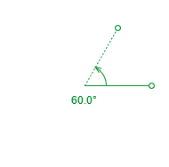
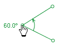
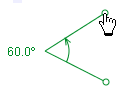
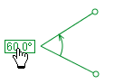
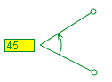
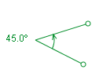
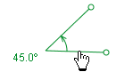
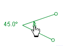
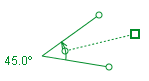

in v spustnem
menuju izberemo Merilna orodja|Kotomer. Po potrebi
lahko tvorimo več kotomerov.
in v spustnem
menuju izberemo Merilna orodja|Kotomer. Po potrebi
lahko tvorimo več kotomerov.Kotomer

Sled Kotomer je orodje za merjenje kotov. Ima oglišče, dve roki in ločno puščico ter izpis kota, ki prikazuje bodisi stopinje bodisi radiane (glej Nastavljanje enot kotov).
Kotomer
tvorimo tako, da kliknemo na gumb Tvori in v spustnem
menuju izberemo Merilna orodja|Kotomer. Po potrebi
lahko tvorimo več kotomerov.
1. Merjenje kotov
Kliknemo in povlečemo oglišče ali krožni konec ene od rok in ju tako naravnamo. Ločna puščica kaže smer (urin kazalec ali obratno) loka, izpis kota in prikaz kota na orodni vrstici prikazujeta njegovo vrednost (pozitivna, če smer urinega kazalca, sicer negativna).

Kot lahko nastavimo na neko določeno vrednost ali s klikom na izpis kota ali na polje na orodni vrstici iz z vnosom želenega kota.

Kotomer premaknemo tako, da povlečemo center ene od rok. Pri tem se kot ali njegova smer ne spremenita.

Če hočemo kotomer zavrteti okoli njegovega oglišča in pri tem ohraniti njegov kot, povlečemo njegovo ločno puščico. Za boljši nadzor lahko premaknemo vstran od vozlišča kvadratek, ki je s črtkano črto povezan z ločno puščico.

2. Sproščanje
položaja
Privzeto ima kotomer fiksiran položaj--to pomeni, da sta njegovo oglišče in položaja rok enaki v vseh sličicah. Z razkljukanjem opcije Fiksiran položaj v njegovem nenuju sledi omogočimo, da se te lastnosti od sličice do sličice spreminjajo.
3. Zaklepanje kotomera
Če merilo zaklenemo, preprečimo kakršnekoli spremembe. To dosežemo z vklopom lastnosti Zaklenjeno v menuju sledi.